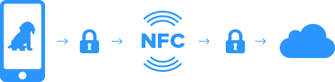

Compatibility:
The compatibility of NFC tags with mobile devices is one of the axes of choice of material support for the storage.
Choice of NFC Chip : NTAG 203
The NTAG203 is a Tag Type 2 proposing a memory 144 bytes with a gross storage of 137 bytes. The actual data can be stored as specified by the stack Application NFC described by the NFC Forum.
The hardware can handle a total of 10,000 cycles of writing. The duration of data storage in standard conditions given by NXP is 5 years
Specification / Technical DATA
| NFC Chip | NTAG 203 |
| Usable Memory | 137 bytes |
| Tag Construction | Clear Sticker |
| Antenna Size | 10mm x 17mm |
| Antenna Shape | Rectangle |
| Antenna Design | Racetrack |
| Scan strenght | 5 |
Data security
To ensure consistency and data integration, the issue of security is important.
In the context of information on animals (tag or collar), they must be non-rewritable, once registered, but readable.
Some data may be encrypted, however, it is still advisable to have only indexes to make the link between the tag and the webservice. The security management is upstream, the data is no longer sensitive and serves as a link.
In conclusion regarding data protection: storage must be non-rewritable and present an inert data for the webservice to then redirect the user based on statements pure application level (Layer 6/7 OSI type).
NFC technology is secure and adapted to the needs of the NFC project by Yummypets.
